INTERESTS
RESEARCH INTERESTS
I was born in Mexico City and lived there until I was 13. When I was a kid, many years before we moved to the US,
my dad started a cooperative, initially composed of a small network of organic farmers from rural
areas across the country. Frustrated by the fact that distributors, supermarket chains, and other middlemen took the majority
of the profits while farmers received just pennies on the dollar, his goal was to create a direct avenue for these farmers to
sell their produce and products to consumers in the city. With farmers at the heart of his operation, constant communication and
travel were necessary. Curious to see other parts of the country, I eagerly accompanied my dad whenever possible. He wanted to
expand my worldview and expose me to the realities faced by much of the population outside of Mexico City. Rural Mexico, rich with
local folklore and Indigenous culture, was a world far removed from my urban daily life.
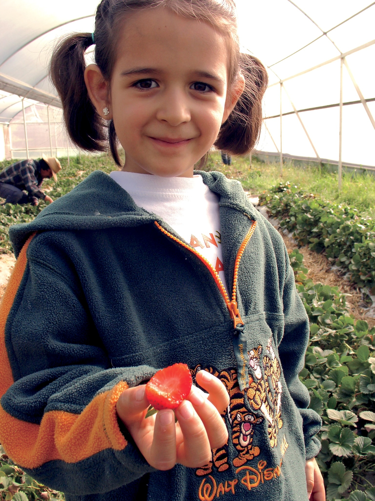
Although I can’t claim an unbroken commitment to agro-socio-ecological studies from that early age, those experiences left a
lasting impression. They sparked an enduring interest, especially as I grew up listening to my dad’s stories about his work and
experiences. I’ve noticed that many of my colleagues in fisheries science have a deep connection to water, having grown up near
coasts or large bodies of water. While I don’t share that connection with marine environments, I feel a similar bond with
agriculture.
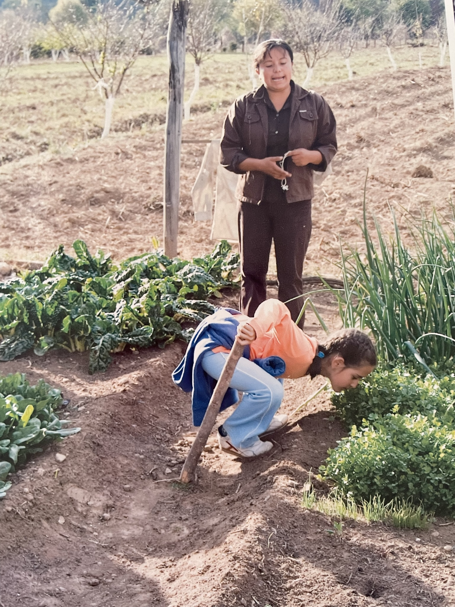
I reconnected with this part of myself during college, particularly in an ecosystem ecology course that delved into soil biology
and in classes focused on the history and mechanization of agriculture. While class discussions sometimes felt abstract, working
at the college farm grounded my thinking about people’s relationship to the land in a practical way. I became involved with the
farm’s outreach programs, helping to foster interest among students and to highlight the college’s impact on the surrounding
community, especially through its contribution to CSA programs.
My undergraduate thesis cemented my academic interest in soils. Initially driven by a fascination with forest soil ecology, I became
intrigued by how small-scale processes, such as microbial nutrient cycling, have far-reaching implications for climate change. I
started wondering how soil microbial communities influence ecosystem responses to disturbance and how they function as intricate
communication networks. Writing my thesis while working at the farm prompted me to reflect deeply on soil health and its importance
for agriculture. It intensified my curiosity about what soil health truly means and how its definition varies across agricultural
fields, ecosystems, and even cultures. I started wondering how soil microbial diversity responds to different agricultural treatments
and how it varies between crops/farms…maybe microbial communities are equally as variable at small scales as they are at large ones?
How do different farming methods affect belowground plant communication networks? How might investigating these dynamics benefit farmers,
particularly in the context of climate adaptation? Most importantly, what do farmers—especially those lacking the resources to manage their
and as they wish—need from scientists? How can I find my niche in this space, and how can this research contribute to policy-level change?
Each question gives rise to another, reinforcing my passion for agroecological research. The one thing I know for certain is that I want
to prioritize an interdisciplinary focus and work to amplify the voices of those who are often excluded from the conversation.
PERSONAL INTERESTS
I am passionate about a wide range of hobbies, and with each move to a new place or new acquaintance,
I find new interests to love. At the core of who I am are painting, reading, running, and dancing.
I’ve been drawing, painting, and doodling since I was a toddler, encouraged by my artistic parents to
explore creative expression. Visual arts have helped me understand both the benefits and challenges of
perfectionism, while also fostering my attention to detail.
Dancing, on the other hand, allows me to let go of control and trust my instincts. It’s a form of expression
that reconnects me to myself and grounds me, while also offering a space for building community. The inclusive
and collaborative dance spaces I’ve been part of have influenced the energy I bring to other group settings.
Running provides a meditative escape, helping me relax and de-stress, while also allowing my driven side to
flourish. What started as a way to carve out time for myself has become a disciplined practice that helps me stick
to routines and long-term goals.
Reading has also become a regular part of my life again. I set aside time every weekend to read and annotate books,
and I listen to audiobooks while I run or work. One of my coworkers and I even started a sci-fi book club, which has
been a great way to exchange ideas and perspectives across generations, challenging me to think critically and stay
open-minded. Below are some of my favorite books, including a few that, while not light reads, have profoundly
impacted my thinking.
 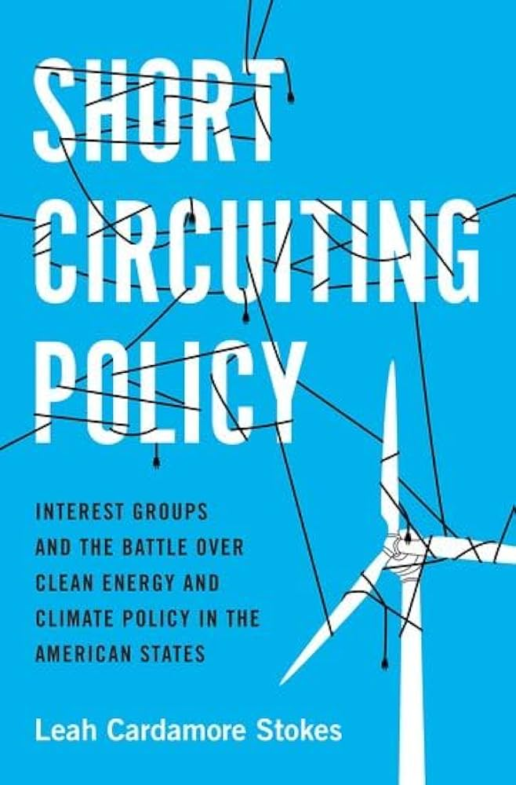
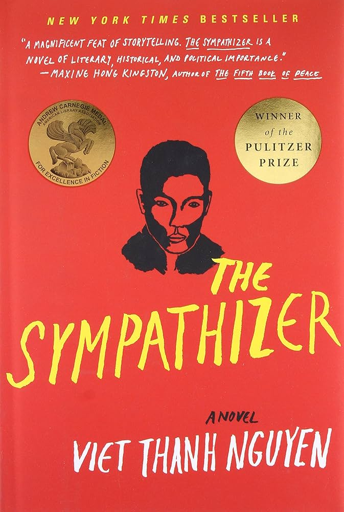
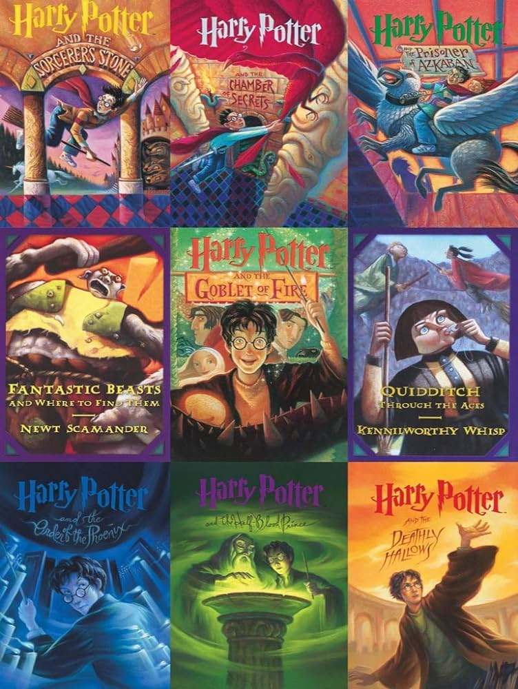
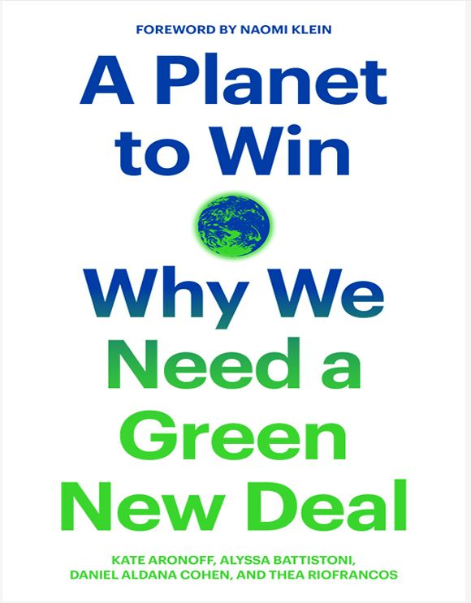
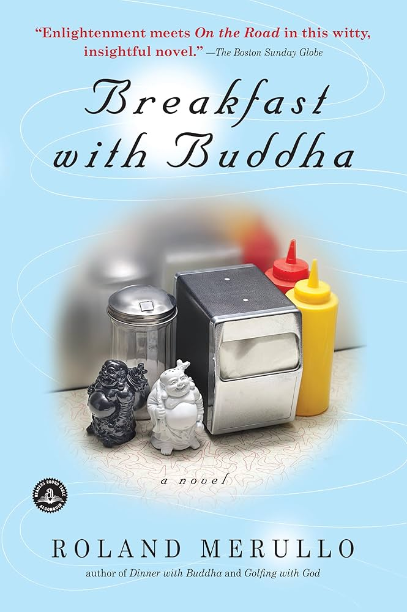
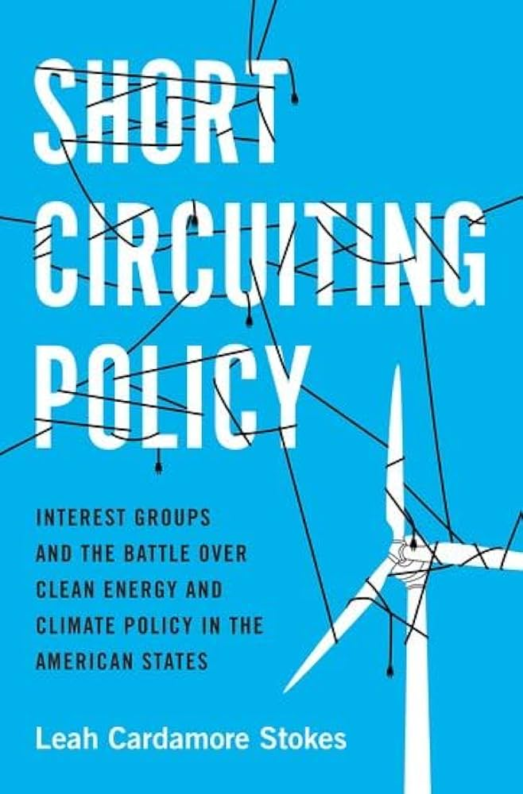
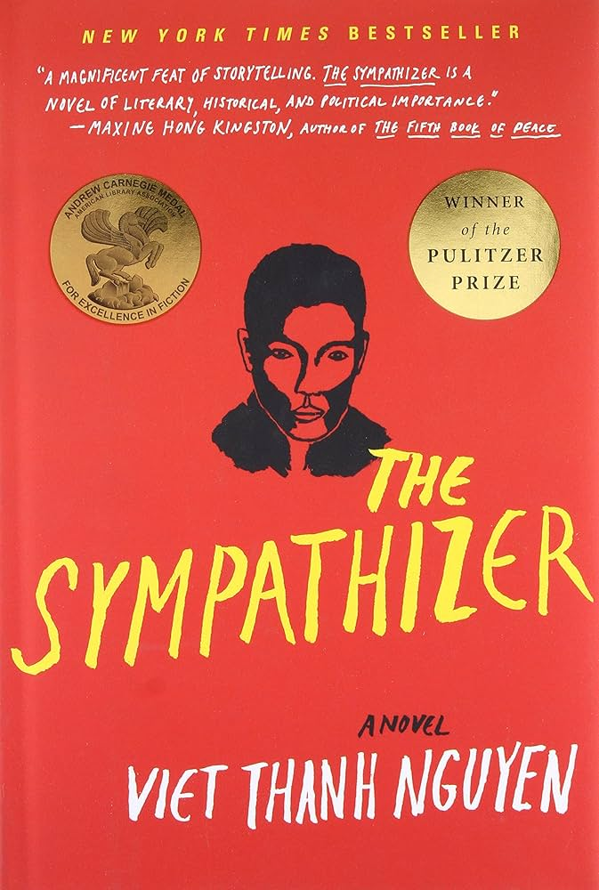
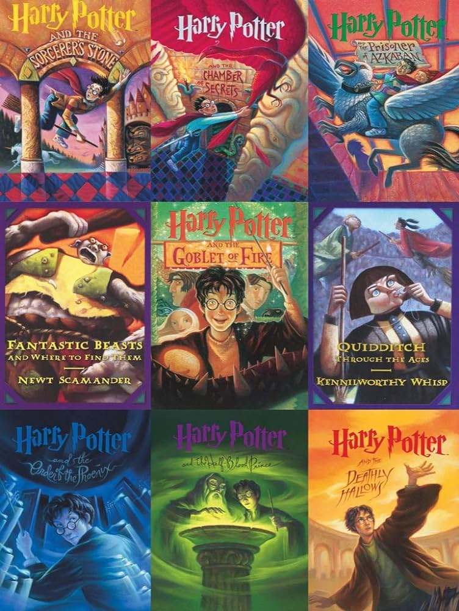
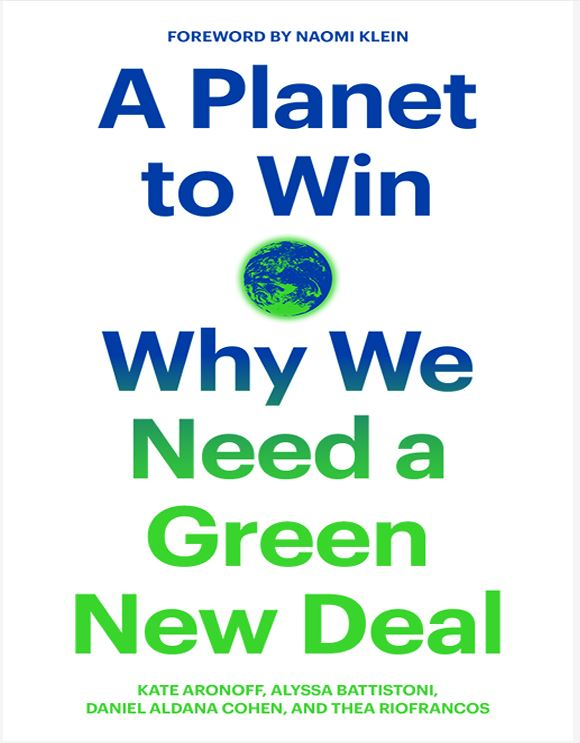
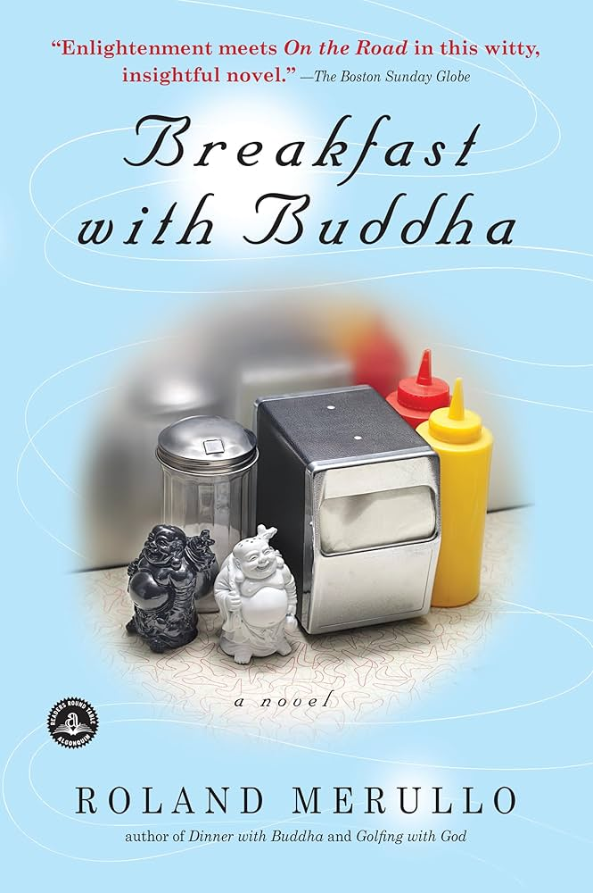
 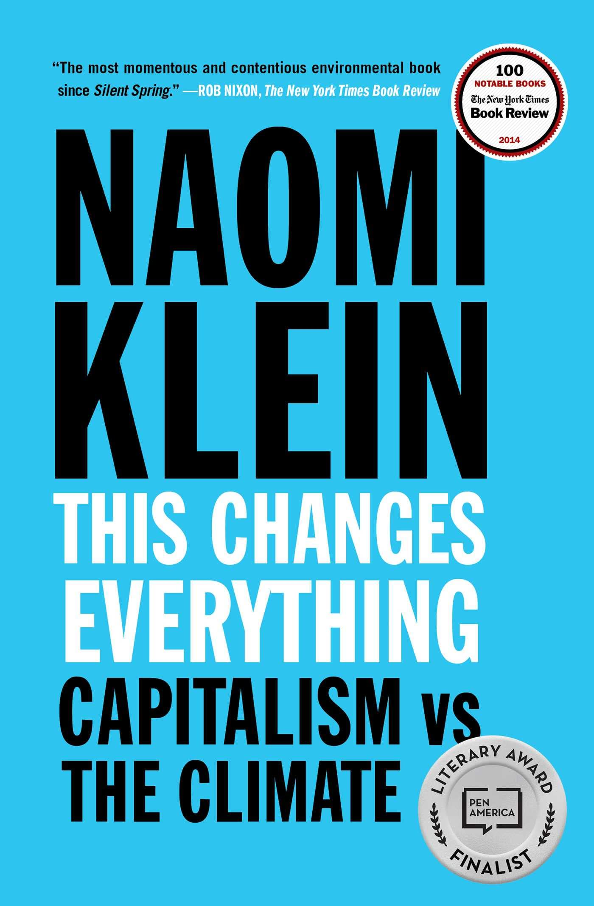
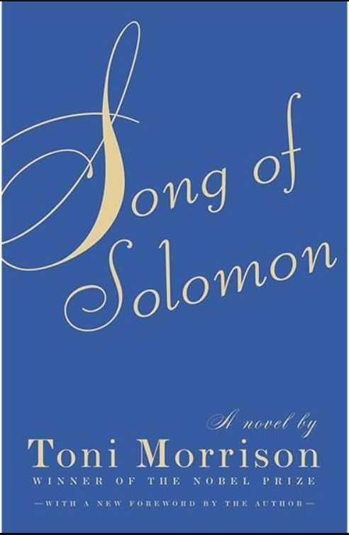
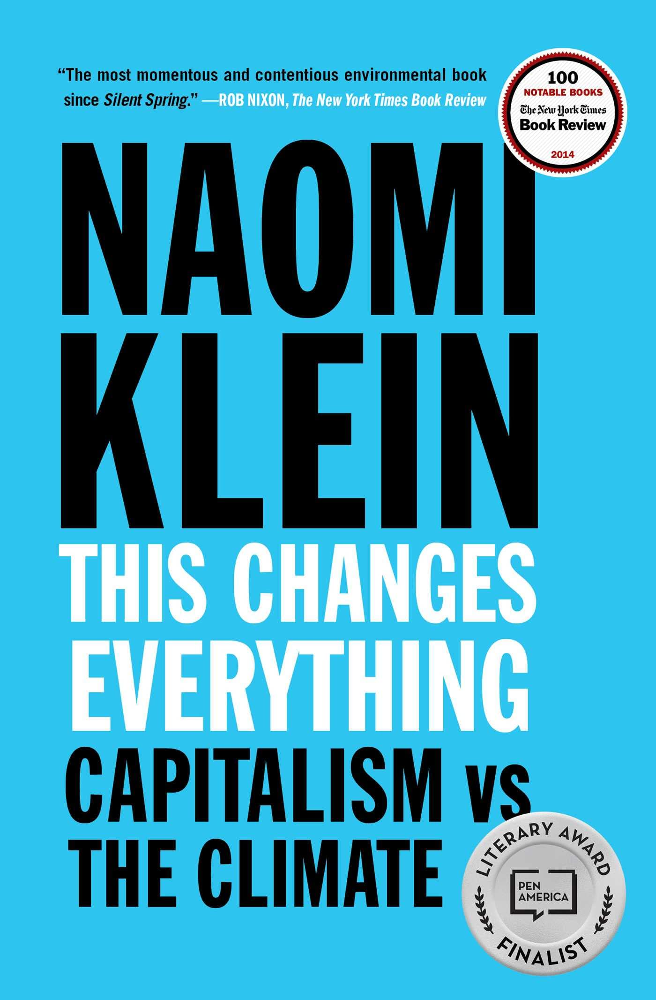
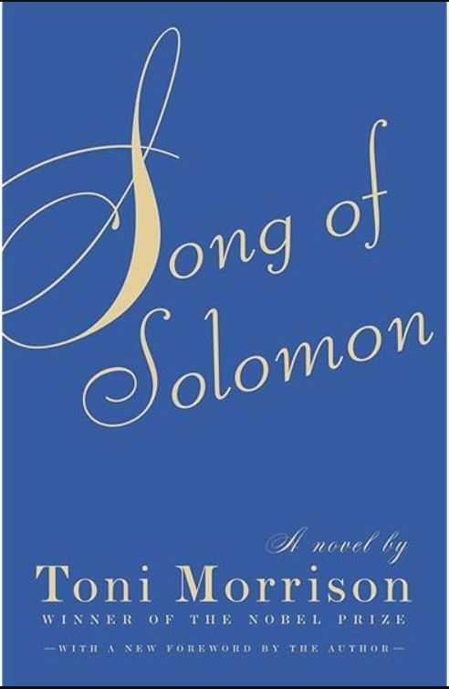